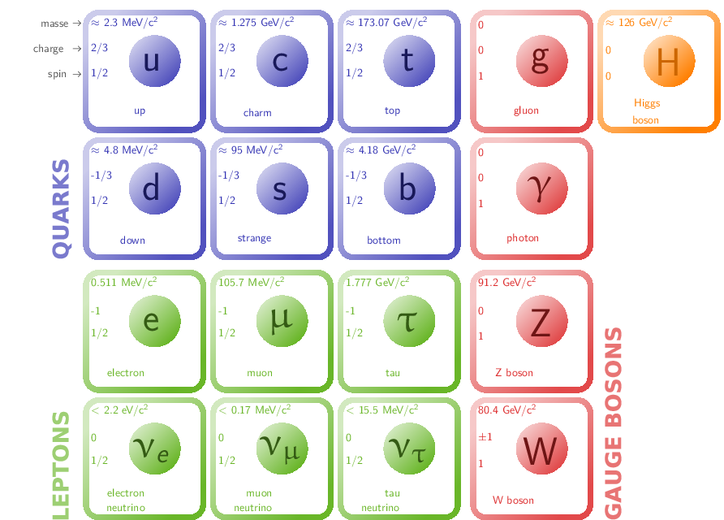

TD3 : Réactions de production et de désintégration de particules

Figure 1: Modèle standard de la physique des particules
1 Production et désintégration de particules
On utilisera les tables des caractéristiques des leptons et hadrons données en annexe.
- Les termes quarks, lepton, hadron, baryon, et méson sont utilisées dans la classification des particules. Dire lesquels sont des constituants élémentaires, donner des exemples de leur utilisation et distinguer entre bosons et fermions.
- Les particules élémentaires sont les quarks (cf. ci-dessous) et les
leptons (du grec leptos = léger) dont le spin demi-entier font de ces
particules des fermions. À la différence des leptons, les quarks
n'apparaissent pas à l'état libre et sont confinés dans les hadrons (du grec
hadros = fort). On distingue deux familles de hadrons :
- les baryons
- (du grec baryos = lourd) constitués de 3 quarks \(q_1q_2q_3\), de nombre baryonique égal à 1 et de spin 1/2 entier. Exemple : nucléons
- les mésons
(du grec mesos = milieu) constitués d'une paire de quark – antiquark, de nombre baryonique nul et de spin entier. Exemple : pions
Les quarks sont sensibles à toutes les interactions tandis que les leptons chargés – \(e\), μ, τ – sont sensibles à l'interaction EM et faible. Les leptons neutres i.e. les neutrinos n'intéragissent que par interaction faible.
Le nom quark est tiré du roman Finnegans Wake de James Joyce :
"Three quarks for Muster Mark!
Sure he has not got much of a bark
And sure any he has it's all beside the mark."
Murray Gell-Mann précisa par la suite l'origine du nom quark dans son livre The Quark and the Jaguar:
"In 1963, when I assigned the name "quark" to the fundamental constituents of the nucleon, I had the sound first, without the spelling, which could have been "kwork". Then, in one of my occasional perusals of Finnegans Wake, by James Joyce, I came across the word "quark" in the phrase "Three quarks for Muster Mark". Since "quark" (meaning, for one thing, the cry of the gull) was clearly intended to rhyme with "Mark", as well as "bark" and other such words, I had to find an excuse to pronounce it as "kwork". But the book represents the dream of a publican named Humphrey Chimpden Earwicker. Words in the text are typically drawn from several sources at once, like the "portmanteau" words in "Through the Looking-Glass". From time to time, phrases occur in the book that are partially determined by calls for drinks at the bar. I argued, therefore, that perhaps one of the multiple sources of the cry "Three quarks for Muster Mark" might be "Three quarts for Mister Mark", in which case the pronunciation "kwork" would not be totally unjustified. In any case, the number three fitted perfectly the way quarks occur in nature."
L'origine des noms de saveur est multiple : les quarks up et down sont nommés en raison de la valeur d'isospin \(T_3\) respectivement égale à ±1/2. Le quark étrange tient son nom de la découverte des particules étranges dans le rayonnement cosmique (cf. TD précédent), l'étrangeté faisant référence à leur durée de vie particulièrement longue. Glashow, qui proposa le nom de charme avec Bjorken, expliqua ce choix en ces termes
"We called our construct the charmed quark, for we were fascinated and pleased by the symmetry it brought to the subnuclear world."
Les noms "bottom" et "top", proposés par Harari, furent logiquement choisis en tant que "partenaires" des quarks "up" et "down". Par le passé, ces quarks furent également appelés quark "beauty" et "truth": si le terme "truth" n'est jamais resté, l'utilisation du terme "beauty" est souvent utilisée en référence aux "beauty factories" (Babar, Belle) étudiant les propriétés de ce quark.
Finalement, le nom de neutrino a été donné par Edoardo Amaldi à la suite du postulat d'existence de cette particule par Wolfang Pauli. Ce dernier l'avait initialement appelé neutron quelques mois avant que James Chadwick découvre le baryon neutron. Toutefois, la référence italienne au petit neutron au travers de l'ajout du suffixe ino est plus complexe qu'il n'y parait : en toute rigueur, le petit neutron aurait du s'appeller neutronino. L'origine du nom neutrino est rapportée par Amaldi
"The name neutrino, (a funny and grammatically incorrect contraction of "little neutron" in Italian: neutronino) entered the international terminology through Fermi, who started to use it sometime between the conference in Paris in July 1932 and the Solvay Conference October 1933 where Pauli used it. The word came out in a humorous conversation at the Instituto di Via Panisperna. Fermi, Amaldi and and few others were present and Fermi was explaining Pauli's hypothesis about his "light neutron". For distinguishing this particle from the Chadwick neutron, Amaldi jokingly used this funny name, - says Occhialini, who recalls of having shortly later told around this little story in Cambridge."
- Parmi les réactions qui suivent, deux ne sont jamais possibles et deux
autres ne peuvent se produire par interaction forte. Trouver ces quatre
réactions en justifiant votre réponse (on supposera que les conditions
énergétiques sont satisfaites pour ces réactions).
- \(K^- + p \rightarrow \bar{K}^0 + n\)
- \(\pi^+ + p \rightarrow \Sigma^+ + K^+\)
- \(\pi^- + p \rightarrow \Sigma^0 + K^+ + \pi^-\)
- \(\pi^- + p \rightarrow \Sigma^+ + K^-\)
- \(\bar{K}^0 + p \rightarrow K^- + p + \pi^+\)
- \(\bar{p} + p \rightarrow \pi^+ + \pi^+ + \pi^- + \pi^- + \pi^+\)
- \(\mu^+ \rightarrow e^+ + \nu_e + \bar{\nu}_{\mu}\)
- \(K^+ + p \rightarrow \Sigma^+ + n + \pi^-\)
Toutes les interactions conservent la charge électrique, le nombre baryonique, le nombre leptonique et le moment cinétique total.
a) \(K^- + p\rightarrow \bar{K}^0 + n\)
b) \(\pi^+ + p\rightarrow \Sigma^+ + K^+\)
c) \(\pi^- + p\rightarrow \Sigma^0 + K^+ + \pi^-\)
d) \(\pi^- + p\rightarrow \Sigma^+ + K^-\) non conservation de l'étrangeté → interaction faible
e) \(\bar{K}^0 + p\rightarrow K^- + p + \pi^+\)
f) \(\bar{p} + p\rightarrow \pi^+ + \pi^+ + \pi^- + \pi^- + \pi^+\) ne conserve pas la charge électrique
g) \(\mu^+ \rightarrow e^+ + \nu_e + \bar{\nu}_\mu\) leptons neutres → interaction faible
h) \(K^+ + p \rightarrow \Sigma^+ + n + \pi^-\) ne conserve pas la charge électrique ni le nombre baryonique
- Dessiner le diagramme de Feynman pour la réaction g)
\(\mu^+\rightarrow e^+ + \nu_e + \bar{\nu}_\mu\)
Figure 2: Diagramme de Feynman de la désintégration de l'anti-muon
2 Résonances
Le baryon \(\Sigma^+\) et le méson \(K^+\) ont pour isospins respectifs \(\vv{T}(\Sigma) = \vv{1}\) et \(\vv{T}(K) = \vv{1/2}\) (avec \(T_3(\Sigma^+) = 1\) et \(T_3(K^+) = 1/2\)). On supposera \(c=b=t=0\) pour tous les hadrons de cet exercice.
- À l'aide de la formule de Gell-Mann et Nishijima, retrouver la valeur de
l'étrangeté de chacun d'eux
Formule de Gell-Mann & Nishijima \(Q/e = T_3 + Y/2\) avec \(Y = B\) + saveur = hypercharge. Dans cet exercice, \(c=b=t=0\) donc \(Y = B\) + étrangeté \(S\)
\(Y(\Sigma^+) = 2\cdot\left(\frac{Q}{e} - T_3\right) = 0\) d'où \(S(\Sigma^+) = -B(\Sigma^+) = -1\)
\(Y(K^+) = 2\cdot\left(\frac{Q}{e} - T_3\right) = 1\) d'où \(S(\Sigma^+) = +1\)
- Quel ordre de grandeur attend-on pour le temps caractéristique de la réaction \(\pi^+ \, + \, p \, \rightarrow \, K^+ \, + \, \Sigma^+\)?
Détermination du type d'interaction \(\pi^+ + p\rightarrow K^+ + \Sigma^+\)
\(\pi^+\) + p → \(K^+\) + \(\Sigma^+\) \(B\) 0 + 1 = 0 + 1 \(\unicode{x2713}\) \(Q/e\) 1 + 1 = 1 + 1 \(\unicode{x2713}\) \(T_3\) 1 + 1/2 = 1/2 + 1 \(\unicode{x2713}\) \(\vv{T}\) \(\vv{1}\) + \(\vv{1/2}\) = \(\vv{1/2}\) + \(\vv{1}\) \(\unicode{x2713}\) \(S\) 0 + 0 = 1 + -1 \(\unicode{x2713}\) Conservation de la parité et du moment cinétique total :
\begin{align*} \vv{I}_\pi + \vv{I}_p + \vv{L}_i &= \vv{I}_K + \vv{I}_\Sigma + \vv{L}_f\\ \vv{0} + \vv{1}/2 + \vv{L}_i &= \vv{0} +\vv{1}/2 + \vv{L}_f\\ \pi(\pi^+)\times\pi(p)\times(-1)^{L_i} &= \pi(K^+)\times\pi(\Sigma^+)\times(-1)^{L_f}\\ (-1)\times(+1)\times(-1)^{L_i}&=(-1)\times(+1)\times(-1)^{L_f} \end{align*}Si \(L_i=L_f\) toutes les quantités sont conservées donc interaction forte. Le temps caractéristique de la réaction est donc de l'ordre de 10-23 à 10-20 secondes.
Calculer l'énergie seuil de cette réaction, qui a lieu sur cible fixe, en adoptant les valeurs suivantes :
\(m_{\pi}c^2\) = 140 MeV, \(m_p c^2\) = 940 MeV, \(m_K c^2\) = 494 MeV et \(m_{\Sigma}c^2\) = 1190 MeV
Calcul de l'énergie seuil des pions :
\begin{align*} T_S &= \frac{|Q|\cdot\Upsigma m_\text{initiale,finale}c^2}{2\cdot m_pc^2}\\ &=\frac{604\cdot(140+940+494+1190)}{2\cdot940}\\ &=\unit[888]{MeV} \end{align*}
- La réaction citée présente une résonance lorsque l'impulsion des mésons π incidents est voisine de 1.5 GeV/c. Quelle est la masse de cette résonance ?
\(\pi^+ + p \rightarrow R \rightarrow K^+ + \Sigma^+\)
Calcul de l'invariant relativiste \(I\)
\begin{align*} I=(E_\pi + E_p)^2 - (\vv{p}_\pi + \vv{p}_p)^2c^2 = (m_Rc^2)^2 \end{align*}or \(\vv{p}_p = \vv{0}\) et \(E_\pi = \sqrt{p_\pi^2c^2 + m_\pi^2c^4}\), \(E_p=m_pc^2\) d'où
\begin{align*} m_R^2c^4 &= \left(\sqrt{1500^2 + 140^2} + 940\right)^2 - 1500^2 = \unit[3.7\,10^6]{MeV}^2\\ &= \unit[1933]{MeV} \end{align*}
- Sa largeur est de l'ordre de 240 MeV. Quelle est sa vie moyenne ?
Largeur Γ = 240 MeV
\begin{align*} \tau =\frac{\hbar}{\Gamma} = \frac{\hbar c}{\Gamma c} = \frac{\unit[197.3]{MeV.fm}}{\unit[240]{MeV}\cdot\unit[3\,10^{23}]{fm/s}} = \unit[2.7\,10^{-24}]{s} \end{align*}
→ désintégration par interaction forte
- Cette résonance est créée lorsque le moment orbital relatif dans la voie d'entrée est \(\vv{l} = \vv{3}\). Quelles sont les caractéristiques \(I^{\pi}\) possibles pour cette résonance ?
\(\vv{L}_i = \vv{3}\)
La réaction \(\pi^+ + p \rightarrow K^+ + \Sigma^+\) se fait par interaction forte de même que \(R\rightarrow K^+ + \Sigma^+\). La réaction de production de \(\pi^++p\rightarrow R\) se fait donc également par interaction forte → conservation de la parité et du moment cinétique total.
\begin{align*} \vv{I}_\pi + \vv{I}_p + \vv{L}_i &= \vv{I}_R\\ \pi(\pi^+)\times\pi(p)\times(-1)^{L_i} &= \pi(R) \end{align*}d'où \(I_R^\pi = 5/2^+\) ou \(7/2^+\)
Le momenti cinétique total de la résonance \(R\) de même que la parité de cette particule ne font pas intervenir de moment angulaire relatif. La résonance \(R\) qui est un baryon est donc constituée de 3 quarks orbitant les uns par rapport aux autres. Ainsi, le moment cinétique total de \(R\) peut se décomposer de la façon suivante
\begin{align*} \vv{I}_R&=\vv{I}_{q_1}+\vv{I}_{q_2}+\vv{I}_{q_3}+\vv{L}_{q_1/q_2/q_3}\\ &=\vv{S}_{q_1}+\vv{S}_{q_2}+\vv{S}_{q_3}+\vv{L}_{q_1/q_2/q_3} \end{align*}étant donné que le moment cinétique intrinsèque d'une particule élémentaire telle qu'un quark est son unique spin. De la même façon, la parité de la résonance \(R\) peut s'écrire
\begin{align*} \pi(R)=\pi(q_1)\times\pi(q_2)\times\pi(q_2)\times\pi(q_3)\times(-1)^{L_{q_1/q_2/q_3}} \end{align*}Aussi, dans le cas de la détermination du moment cinétique et de la parité d'une particule seule, le moment angulaire relatif des constituants élementaires de cette particule n'intervient pas.
- Quel est son isospin ?
Conservation de \(\vv{T}\) et \(T_3\) dans la désintégration de \(R\rightarrow K^++\Sigma^+\)
\begin{align*} T_3(R) &= T_3(K^+) + T_3(\Sigma^+) = 3/2\\ \vv{T}(R) &= \vv{T}(K^+) + \vv{T}(\Sigma^+) = \vv{1/2} + \vv{1} = \vv{1/2},\vv{3/2} \end{align*}or comme \(T_3(R) = 3/2 \Leftrightarrow \vv{T}(R) = \vv{3/2}\)
- Pour respecter les notations usuelles, quel nom doit-on lui donner ?
- La conservation du nombre baryonique, de la charge électrique et de l'étrangeté font que \(R\) est un baryon de charge \(Q/e=+2\) et d'étrangeté nulle. En se reférant au tableau page 30, on note que cette résonance présente les mêmes propriétés que la baryon \(\Delta^{++}\) à ceci près que sa masse 1933 MeV et sa durée de vie sont respectivement plus élevée et plus courte1. La résonance \(\bm{R}\) est donc un état excité de \(\bm{\Delta^{++}}\).
- Soit la réaction \(\pi^-+p\rightarrow K^++\Sigma^-\), induite par des \(\pi^-\) de 1,5 GeV/c sur des protons. Montrer que cette réaction est possible par interaction forte.
\(\pi^- + p \rightarrow K^+ + \Sigma^-\)
\(Q/e\), \(B\), \(I^\pi\) sont conservés.
\(\pi^-\) + p → \(K^+\) + \(\Sigma^-\) \(T_3\) -1 + 1/2 = 1/2 + -1 \(\unicode{x2713}\) \(\vv{T}\) \(\vv{1}\) + \(\vv{1/2}\) = \(\vv{1/2}\) + \(\vv{1}\) \(\unicode{x2713}\) \(s\) 0 + 0 = 1 + -1 \(\unicode{x2713}\)
Remarques : les baryons \(\Delta^{++}\) et \(\Delta^-\) sont respectivement constitués de 3 quarks \(u\) et 3 quarks \(d\). Or le moment cinétique total de ces particules 3/2 impliquent que le spin des 3 quarks soient alignés "vers le haut". Le principe de Pauli exclut une telle configuration pour des fermions. En ajoutant le nombre quantique de couleur, la chromodynamique quantique permet un tel état tout comme pour le baryon Ω- postulé par Gell-Mann et découvert à Brookhaven en 1964.